エンゲルガッセ通りと呼ばれる裏路地には木組みの長屋が立ち並ぶ。 地面に並ぶ扉は半地下への入口で路地が1.5mかさ上げされたときの名残なんだそう。 観光地化されておらず歴史が日常に溶け込んでいる様子がとてもいい。
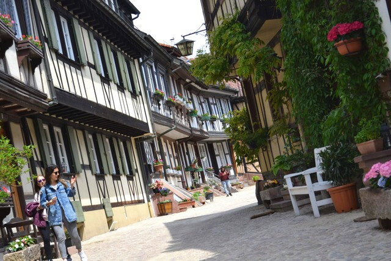
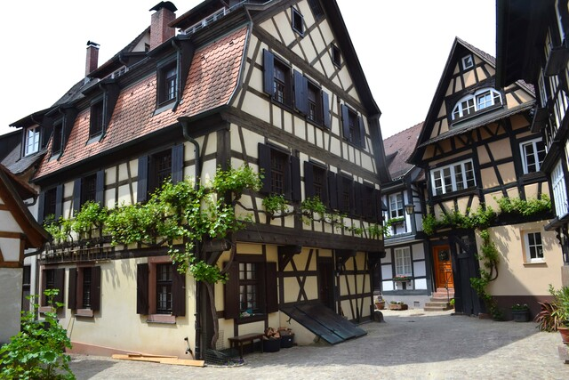
路地の片隅にひっそりと残る古井戸。
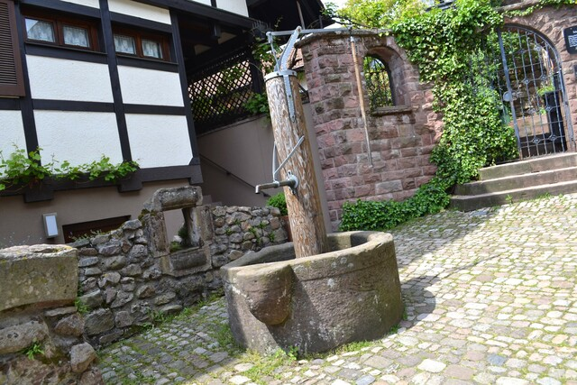
日時計が静かに時を進めていく。時間が1時間ずれてると思ったら、そうか、サマータイムだからだ。 何百年も前から街を見守ってきた日時計にサマータイムなんてものは似合わない。
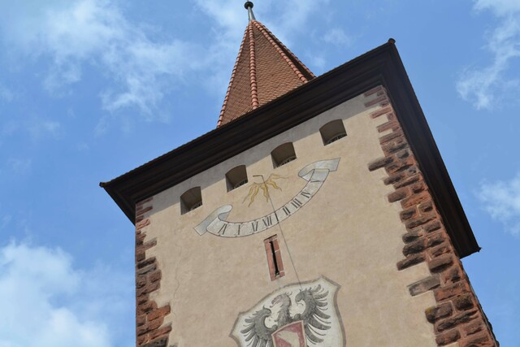
1両編成の電車の終点、Oberharmersbach村。線路はここで途切れている。 なぜか電車に地元の鼓笛隊が乗ってきて盛大に演奏開始。 ベビーカーに乗せた大太鼓までいるぞ・・・。乗客みんなで手をたたき一緒に歌を歌う。 乗客のひとりが帽子にチップを集めて鼓笛隊にプレゼント。 そして電車は遅延するが誰も気にしない。南ドイツの田舎は素晴らしい。
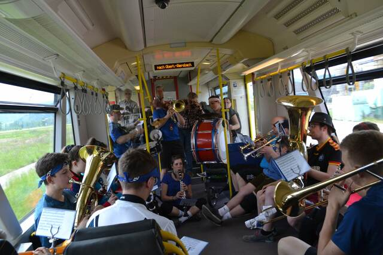
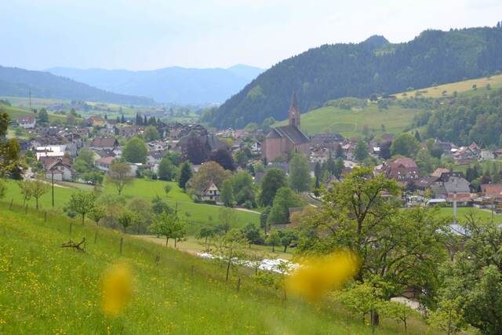
シュヴァルツヴァルトのほぼ中央部に位置するトリベルク。 この村にはドイツで一番大きな滝と一番大きなカッコウ時計がある （カッコウ時計はシュヴァルツヴァルトの特産品である。ちなみにあれは鳩ではなくカッコウ）。
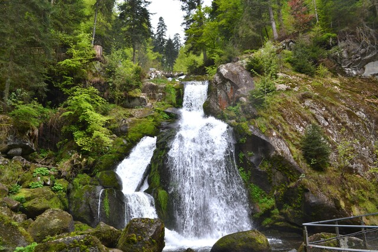
ハスラッハからさらに奥に進んだところにあるシルタッハ。 シュヴァルツヴァルトでもっとも気に入ったのがこの街かもしれない。 シュヴァルツヴァルト（黒い森）の名前のとおり、 シルタッハの街はドイツトウヒの黒い森に囲まれた渓谷の斜面に位置する。 木組みの家々、そのシルエット、白い壁に映える木枠とカラフルな鎧戸。 霧雨が舞う街は静まり返り、まるで中世の世界で時間が止まってしまったかのよう。
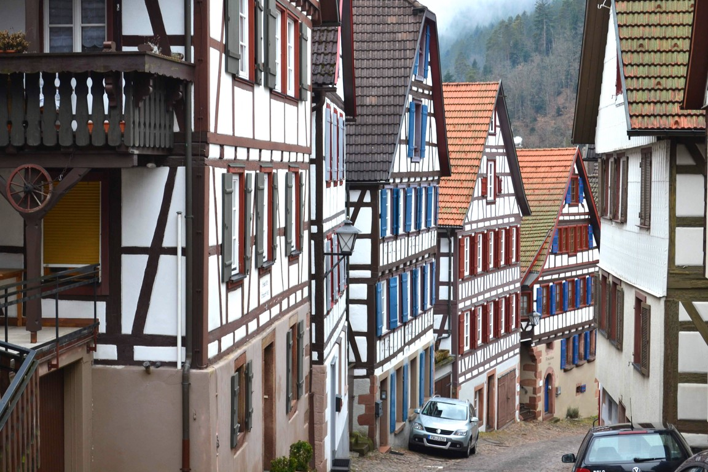
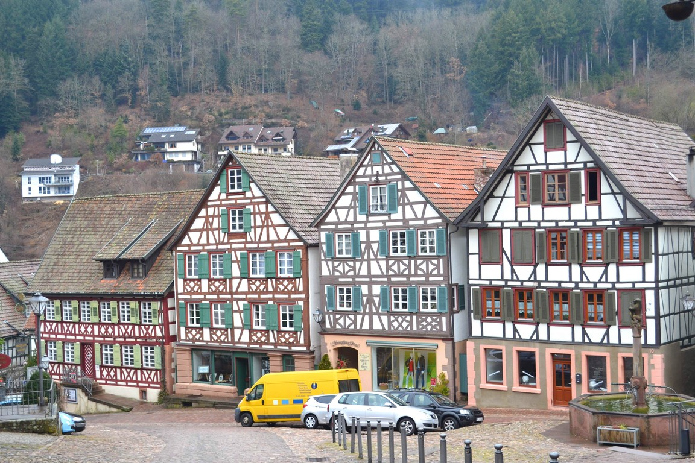
しかし、3月というのは南ドイツを訪れるにはあまり良くない季節かもしれない。 街に「色がない」のだ。 花と緑が街を彩る春と夏、紅葉に色づく秋、雪に包まれる冬と比べると物足りなさを感じてしまう。 南ドイツの風景にとって3月は蕾のような季節なのかもしれない。
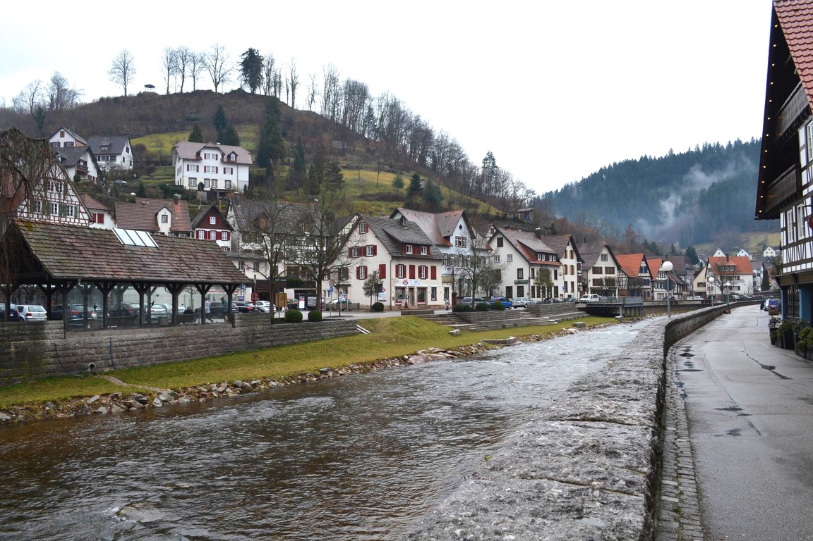
ゲンゲンバッハから少し奥に行くとハスラッハという街がある。 シュヴァルツヴァルトらしい木組みの家々と石畳の路地。
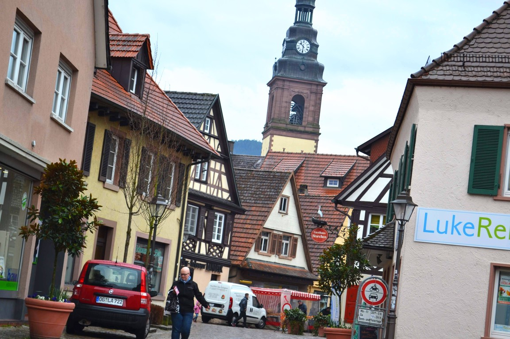
シュヴァルツヴァルトに位置するゲンゲンバッハ。 「ロマンチックな宝石のような街」といわれる街だが、 木組みの家々と情緒あふれる石畳の路地が素晴らしい。 この日は雨だったが、中央のマルクト広場には市場が開かれ、 野菜や果物、はちみつ、チーズ、イースターの飾り物などが売られていた。 ドイツの日常の普段の息づかいが感じられる場所。
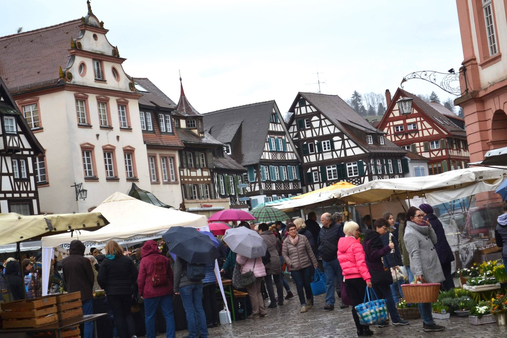
ヘルマン・ヘッセの故郷カルプのひとつ隣の駅がヒルザウ。 このとてもとても小さな山間の集落には廃墟化した修道院がある。 9世紀に創建されたベネディクト会の修道院で、 17世紀の大同盟戦争で破壊されそのまま放置された修道院だ。
放送大学の芸術論の講義で青山先生が「廃墟の美」について語っておられた。 自然美と芸術美について論じるコンテキストのなかで、 「廃墟の美」とは、人間が創りだした「芸術美」に対して、 長い時間のなかで建築物が風化する過程で自然が創りだした「自然美」が重なり合うことによって廃墟の美は成立する、 という論旨だった。 この修道院には「廃墟の美」がある。
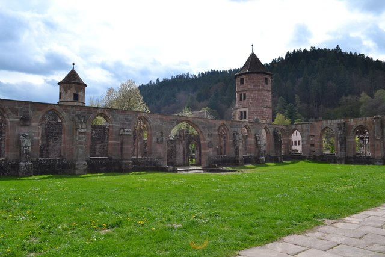
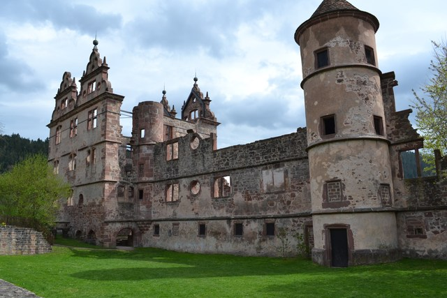
マウルブロン修道院のところでも述べたが、 ベネディクト会の修道院は、装飾性をいっさい排除するかわりに窓から降り注ぐ光の動きで世界が表現される。 その姿は廃墟になったあともしっかり残っている。 晴れ間がのぞくと、音もなく光がそっと射し込んできて朽ち果てた廃墟に光の帯を作り出す。 どこまでも静かな美しさだ。
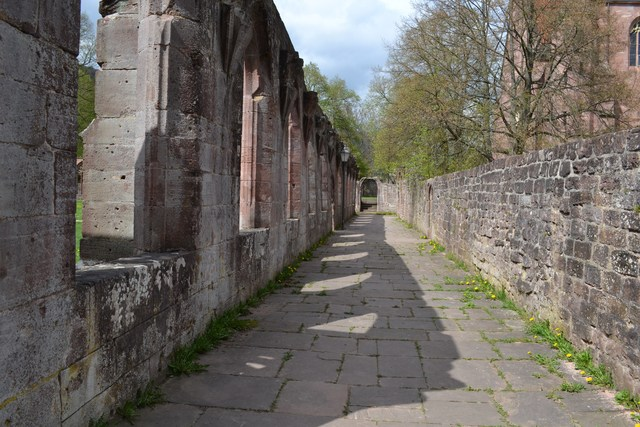
ヘルマン・ヘッセの故郷、カルプ。 ヘッセの「少年の日の思い出」や「車輪の下」に描かれる景色に惹かれて、ヘッセが育った故郷を訪れてみた。 ナゴルト川の渓谷沿いの、山に挟まれた小さな街だ。 このあたりはシュヴァルツヴァルト（黒い森）と呼ばれるドイツトウヒの森が広がっている。
ところで、「少年の日の思い出」は日本の中学の国語の教科書にはだいたい載っているが、 ドイツではまったく知られていない。
木組みの家々が立ち並ぶ姿が美しい。
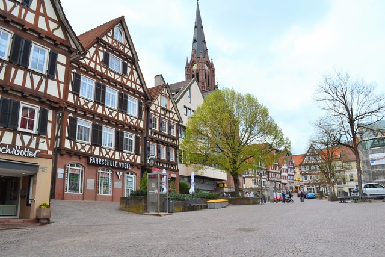
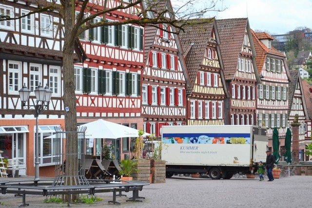
ヘッセの像。ナゴルト川を渡る橋の上に立っている。
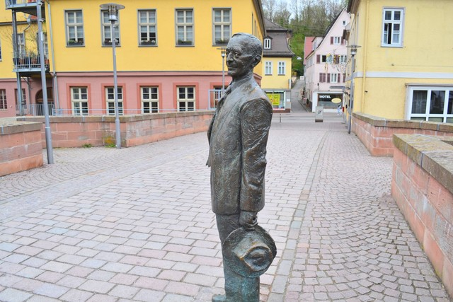
すてきな裏路地。
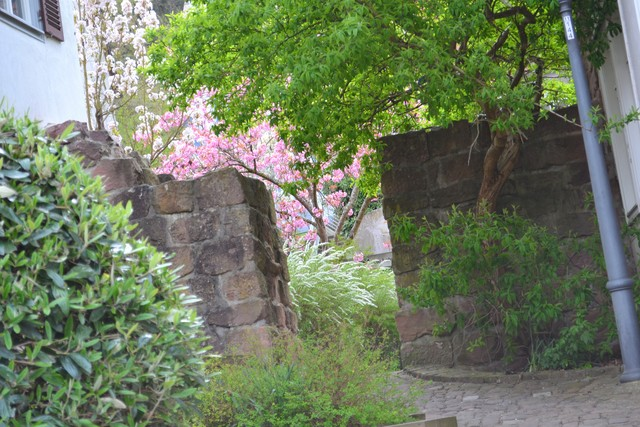